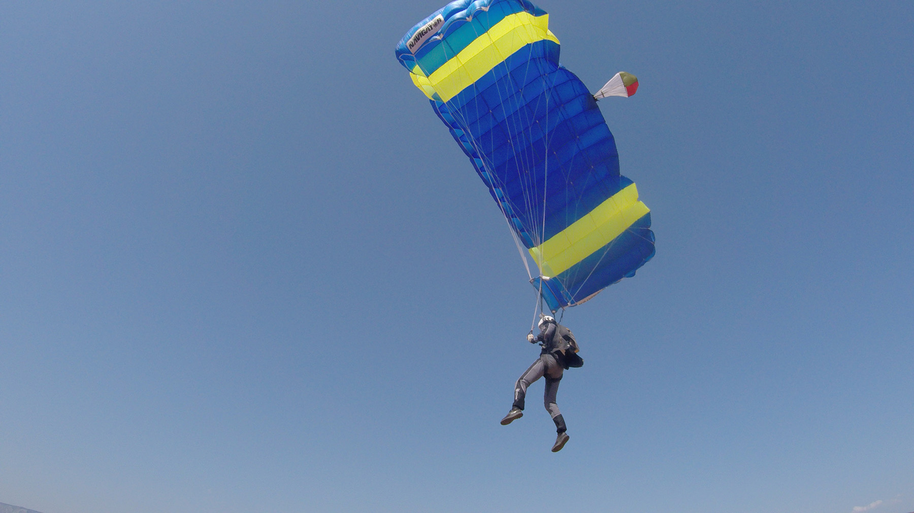
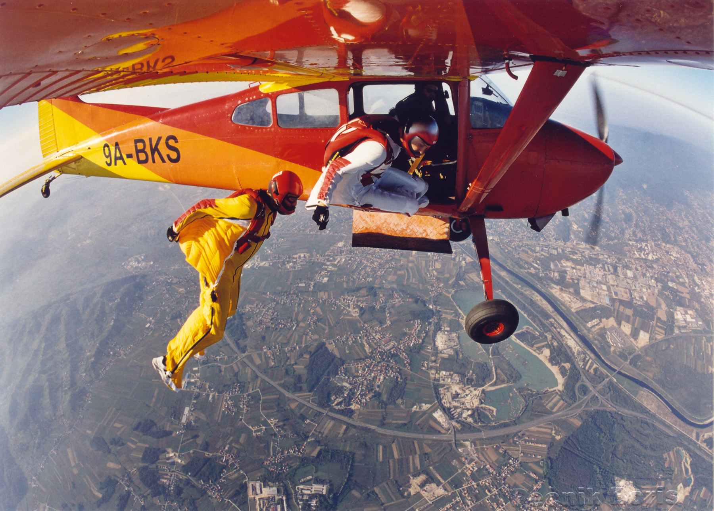
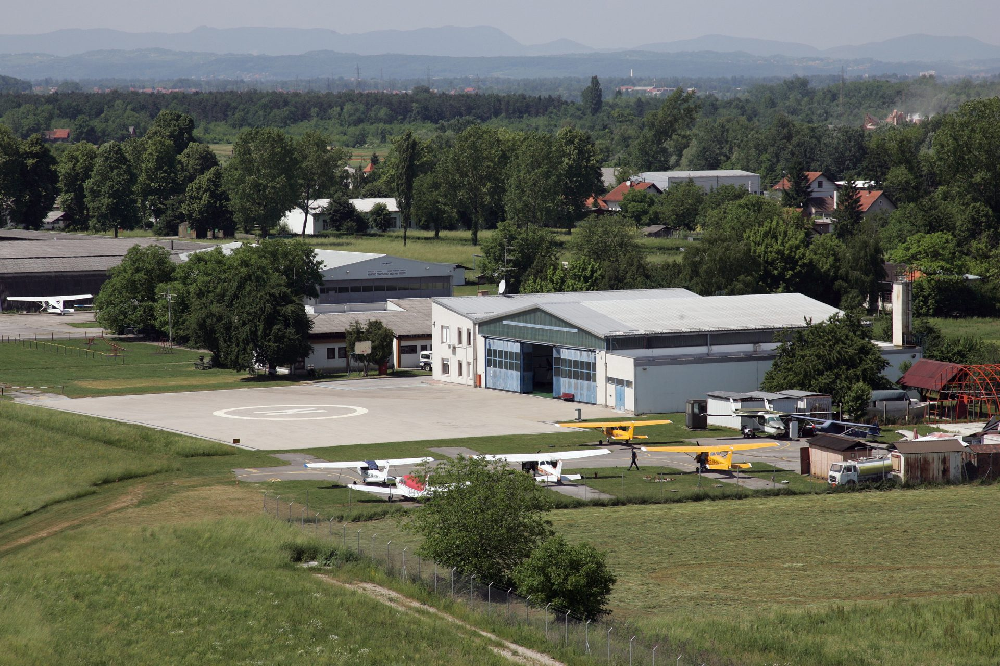

VIJESTI
Proljetni termin škole padobranstva kreće od 06.03.2023
Obuka padobranaca – Škola padobranstva, program koji je prihvaćen od Hrvatske agencije za civilno zrakoplovstvo. omogućuje Vam da u najkraćem mogućem roku naučite sve što je potrebno za prve sigurne samostalne skokove u padobranstvu.More ...

Cijene školskih padobranskih skokova s najmom opreme od 33 do 45 eura!
Nakon završene početničke obuke nastavljate dalje skakati kao učenik AK Tandem. Sve dok ne dobijete padobransku dozvolu Kategorije A. Nimimalni broj skokova za dobivanje padobranske dozvole je cca 35 skokova.More ...

Škola padobranstva - nezaboravno iskustvo
Padobranstvo, potpuno nova VJEŠTINA DINAMIČKOG PROMETA – kretanje u novoj dimenziji letjeti … More ...

Lokacija padobranskog kluba - Zagreb, Lučko
Aerodrom Lučko ima veliku površinu i nudi sigurno okruženje za sve zračne aktivnosti. Aerodrom nam osigurava veliku sigurnost i “komociju”. To je razlog što imamo školu padobranstva oduvijek na aerodromu LučkoMore ...
Liječnički pregled prije prvog skoka!
Prije prvog skoka u početničkoj obuci škole padobranstva potrebno je napraviti liječnički pregled. Trenutno cijena liječničkog pregleda je cca 50 eura. Trebate biti punoljetni, 18 godina. Ako imate manje od 18 i više od 16 godina potrebna vam je suglasnost roditelja da pohađate školu padobranstva.More ...